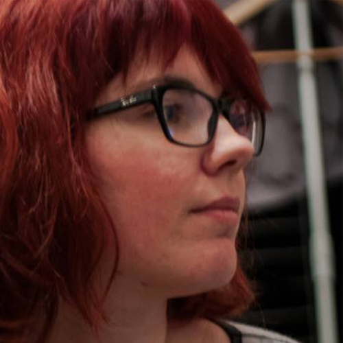

Simon Degouey Justine
Poste/mission : Chef de projet / responsable com'
Entreprise : Forum Thalie
Lieu : Paris
Contacter l'étudiantPoste/mission : Chef de projet / responsable com'
Entreprise : Forum Thalie
Lieu : Paris
Contacter l'étudiantAssociatif
Association de type loi 1901
L'association a pour rôle de promouvoir la culture populaire moderne de tous horizons lors d'événements publics et salons en France et dans les pays francophones.
Du 15 mai au 15 juillet.
Supervision du projet Hajime, marathon vidéoludique caritatif, en collaboration avec le directeur du projet.
Hajime est un événement caritatif destiné à réunir des fonds au bénéfice d'Autisme Europe. Entièrement diffusé sur Internet grâce au site de streaming Twitch, le but était de superviser la refonte du site web de Hajime, d'entrer en contact avec les partenaires et d'assurer la visibilité de l'événement sur les réseaux sociaux.
Dépasser le montant recueilli l'année précédente et engager le plus de monde possible autour de l'événement.
Réussir à coordonner tous les membres travaillant sur le projet, via le télétravail et la visioconférence, proposer des solutions réalisables techniquement, à la fois pour nos équipes de développement, mais respectant également les possibilités de l'association partenaire.
Aucune rigidité dans le processus de validation ou dans la réalisation du projet, le seul facteur décisif était qu'une majorité absolue vote en faveur d'une proposition.
Durant l'étape de refonte du site web, j'ai dû superviser la création de la maquette ainsi que le choix des fonctionnalités présentes sur le site jusqu'à sa mise en production.
Voir la réalisationOui
Le directeur du projet a validé les choix graphiques, éditoriaux et ergonomiques proposés.
Chaque étape a été discutée avec l'équipe pour pondérer les différentes possibilités et évaluer les difficultés éventuelles.
Le site Web est abouti, fonctionnel et répond au cahier des charges établi au début du projet de refonte.
La communication en interne est primordiale durant toute la réalisation d'un tel projet, d'autant plus que nous étions tous dans des conditions de télétravail. Il faut être rigoureux et précis dans la transmission de l'information aux équipes. Savoir s'adapter rapidement en cas d'imprévu et savoir faire des concessions pour que le projet prenne la meilleure direction possible.
Être ferme ne doit pas vouloir dire être vindicative. Je changerais donc mon argumentaire et ma manière d'échanger avec mes différents collaborateurs, fussent-ils selon moi dans l'erreur vis-à-vis du projet. Établir une méthodologie de travail plus rigoureuse afin d'optimiser le temps de travail.
Devoir s'adapter à de nombreux points de vue et vision d'un même projet et savoir reconnaître ce qui est le plus pertinent, même s'il ne s'agit pas de mon point de vue initial.
{kind=link}